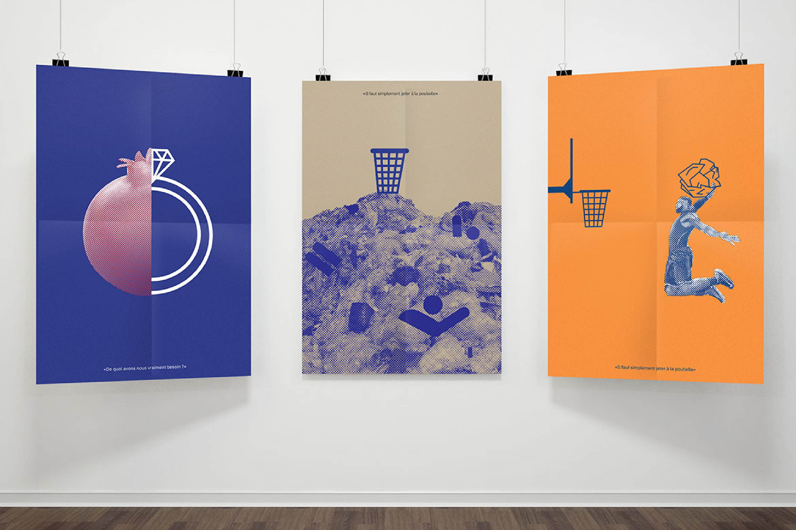
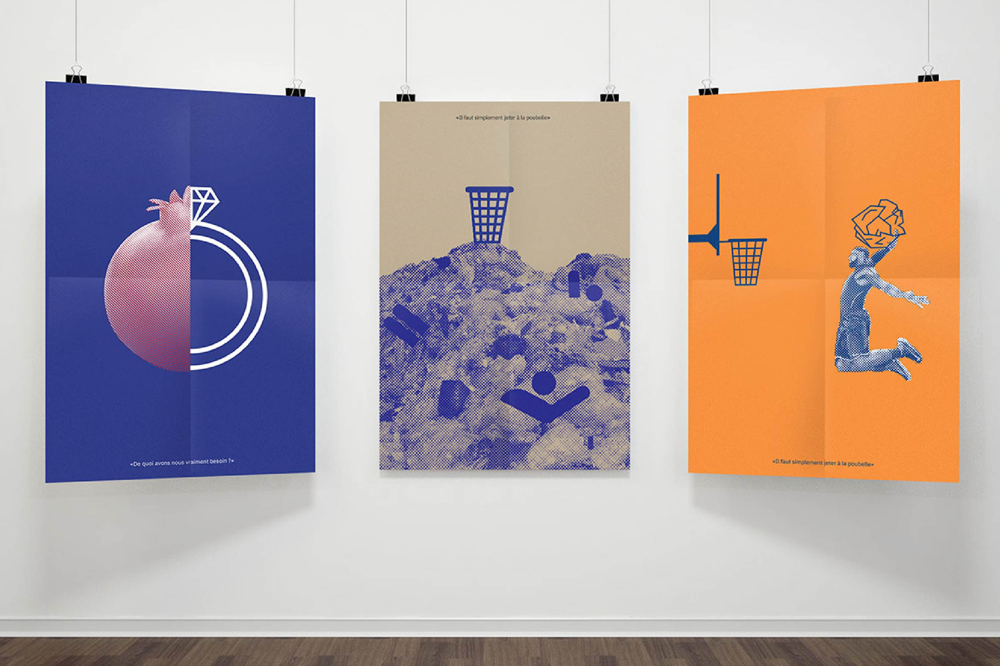
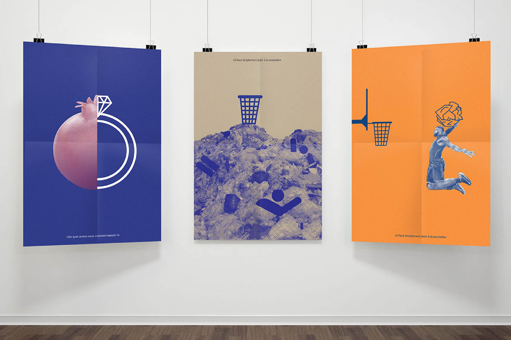
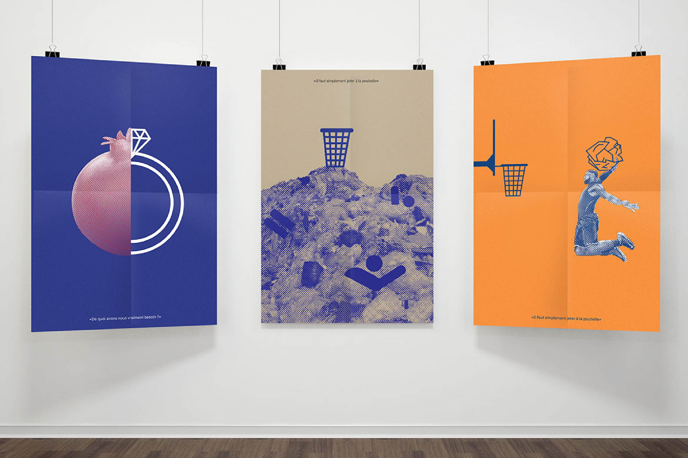
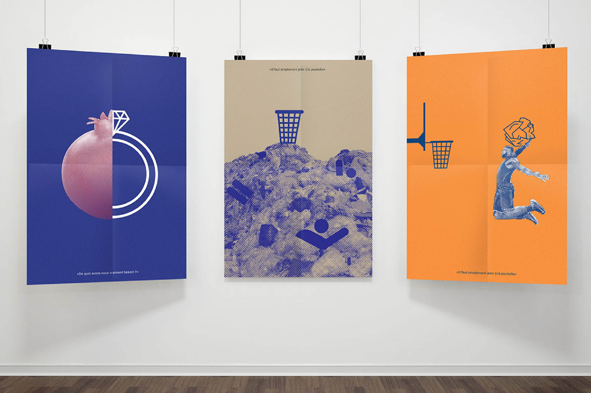

Design de message
Suite au contexte actuel, la recyclerie (tiers lieu à Paris), effectue une exposition. Nous avons écouté les différents podcast disponibles sur leur site afin d’en tirer des phrases pour effectuer une affiche qui utilise comme moyen graphique l’hybridation entre pictogramme et images tramées. Pour la phrase de Ludovic FRANCESCHET je suis partie sur l’une des conséquences en noyant l’humain rendant presque illisible. De plus, la poubelle vide au-dessus rend absurde car tous les déchets sont en dessous. Et pour une autre affiche j’ai pris le choix de m’appuyer sur l'idée de rendre le geste ludique en faisant la comparaison avec un sport tel que le basket, rejoignant les valeur de FRANCESCHET, éboueur diffusant de la positivité tout en éduquant sur l’importance de jeter ces déchets sur les réseaux sociaux Pour la seconde phrase j’ai joué avec la forme d’un fruit, représentant un réel besoin pour la survie tandis que de l’autre côté un symbole de matérialisme avec la bague ou le diamant. Créant un contraste fort et clair au premier coup d'œil sans même lire la citation en bas.
